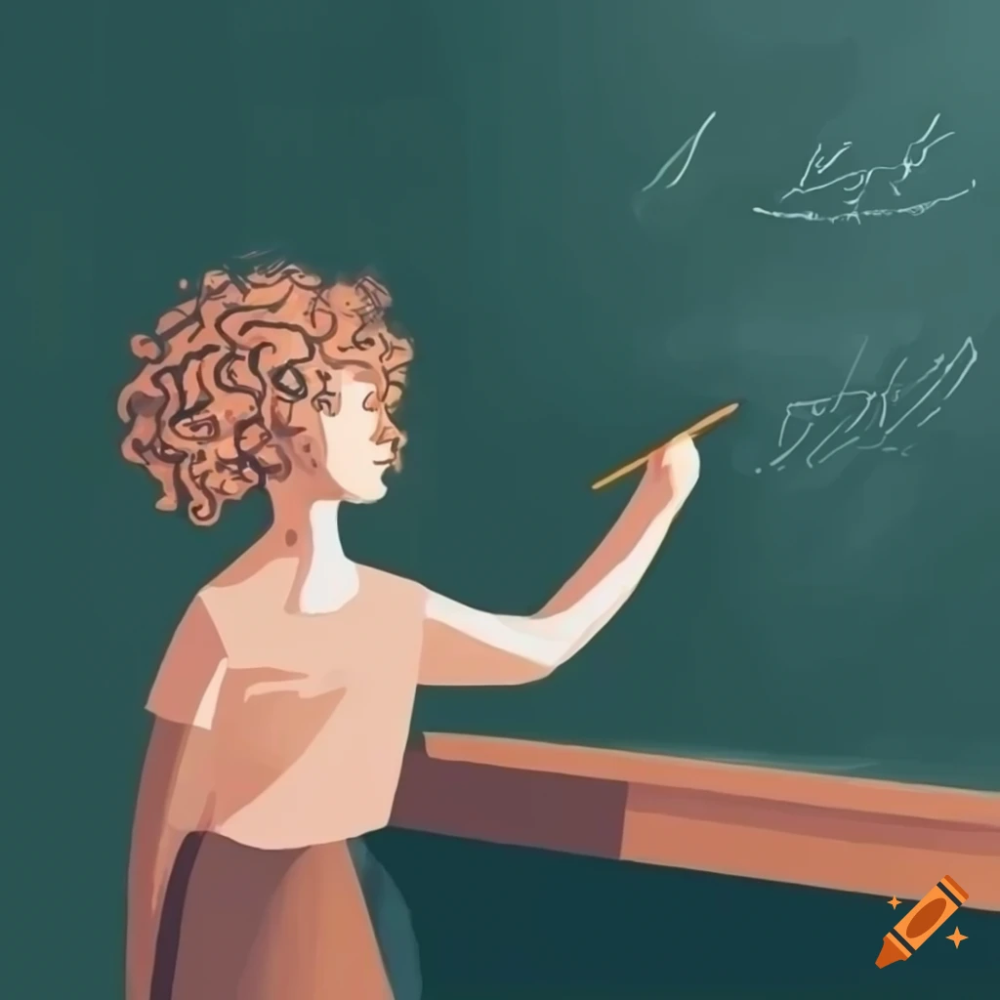

No século XXI, a importância da educação nas escolas assume um papel ainda mais significativo do que em décadas passadas. Em um mundo cada vez mais globalizado e tecnológico, a educação torna-se o alicerce fundamental para o desenvolvimento individual e coletivo. Nas escolas, não se trata apenas de transmitir conhecimentos acadêmicos, mas de preparar os alunos para enfrentar os desafios complexos do século atual.
A educação no século XXI vai além da simples transmissão de informações, ela deve promover habilidades essenciais, como pensamento crítico, criatividade, colaboração e resolução de problemas. Com a rápida evolução da tecnologia e das profissões, é crucial que os estudantes desenvolvam a capacidade de aprender continuamente ao longo da vida, adaptando-se a novas realidades e demandas do mercado de trabalho.
Além disso, a educação nas escolas no século XXI desempenha um papel crucial na promoção da igualdade de oportunidades. Ao garantir acesso a uma educação de qualidade para todos, independentemente de origem social ou econômica, as escolas contribuem para a construção de uma sociedade mais justa e inclusiva. Portanto, investir na educação é investir no futuro, capacitando indivíduos a enfrentar os desafios e aproveitar as oportunidades do mundo contemporâneo.
Novidaes do Jk, e so escutar